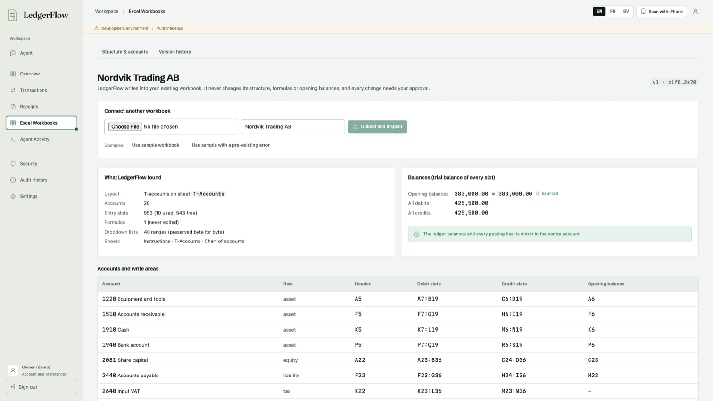
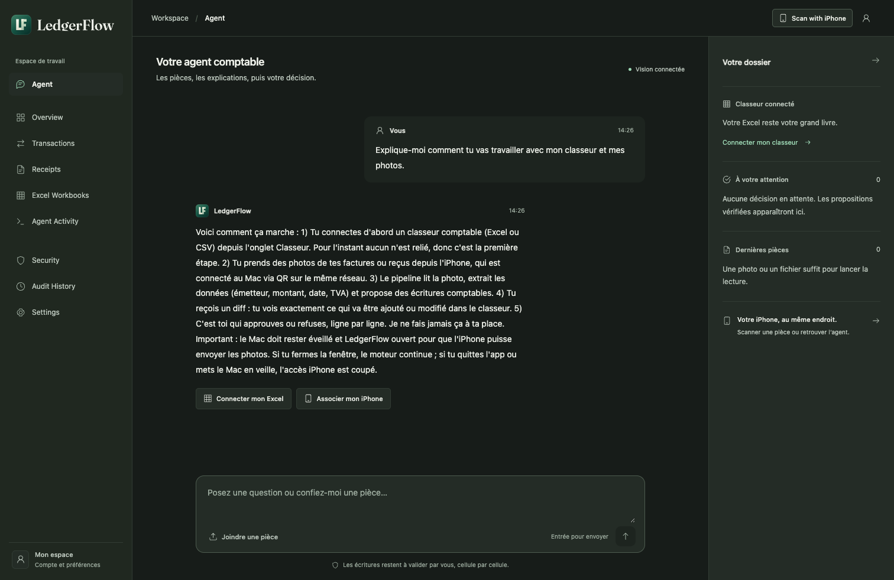
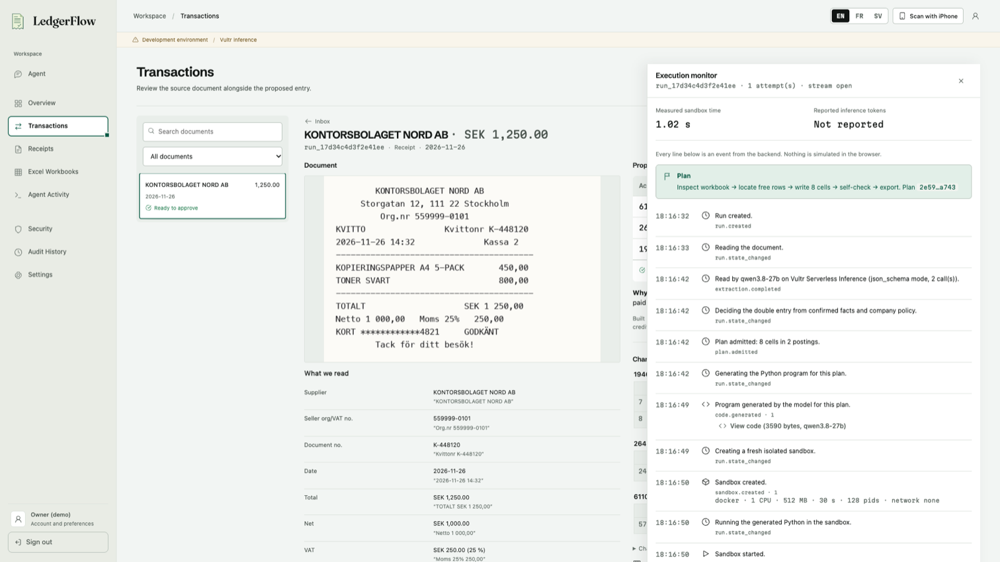
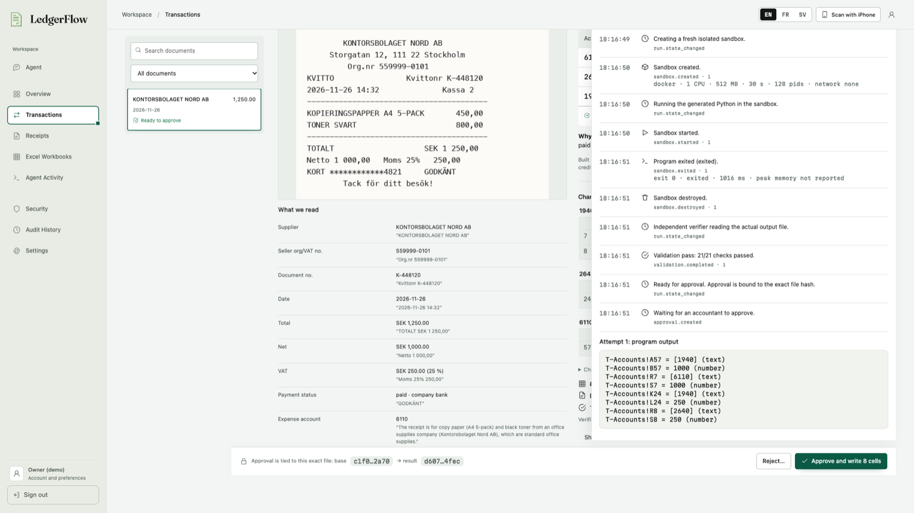

Connect your workbook
Import Excel and confirm the account mapping before writing entries.

LedgerFlow for Mac
See the receipt, ask the agent and approve the exact changes to your Excel workbook. All from one workspace.

Import Excel and confirm the account mapping before writing entries.

Read the receipt and see what the agent did inside the sandbox.

Review the proposed changes and download the verified workbook version after approval.

Try the same receipt-to-Excel workflow with sample data and no invite code.